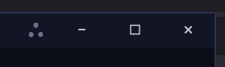
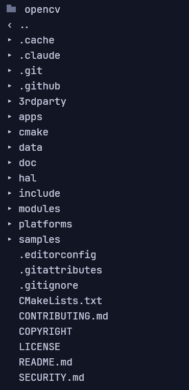
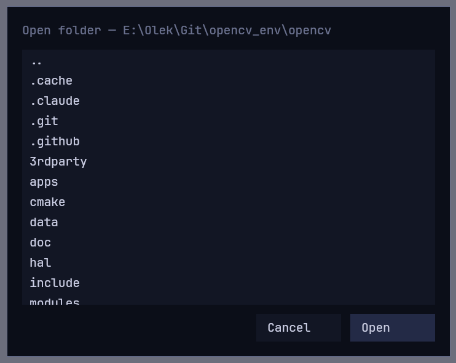
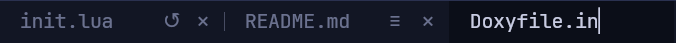
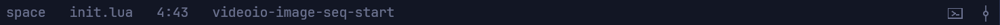
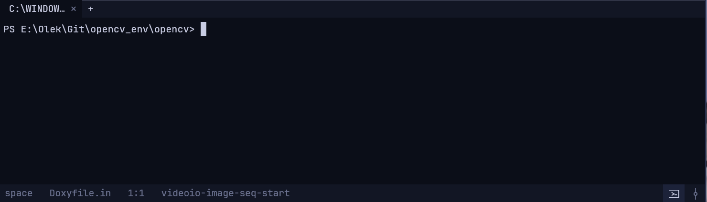
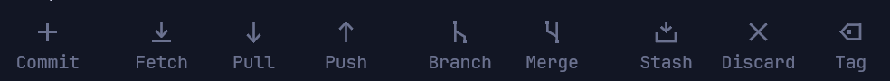
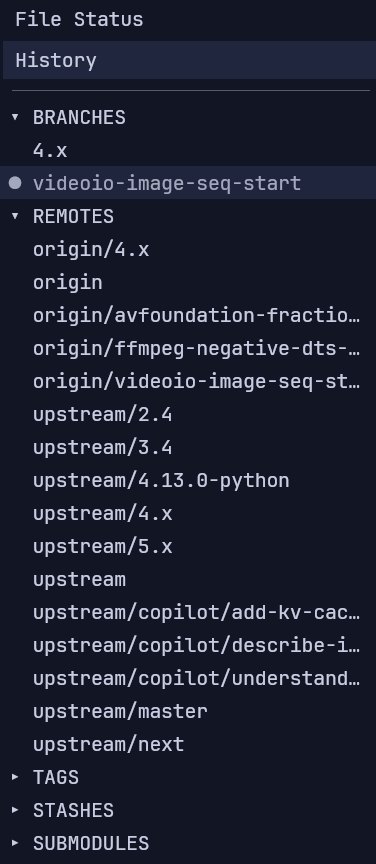
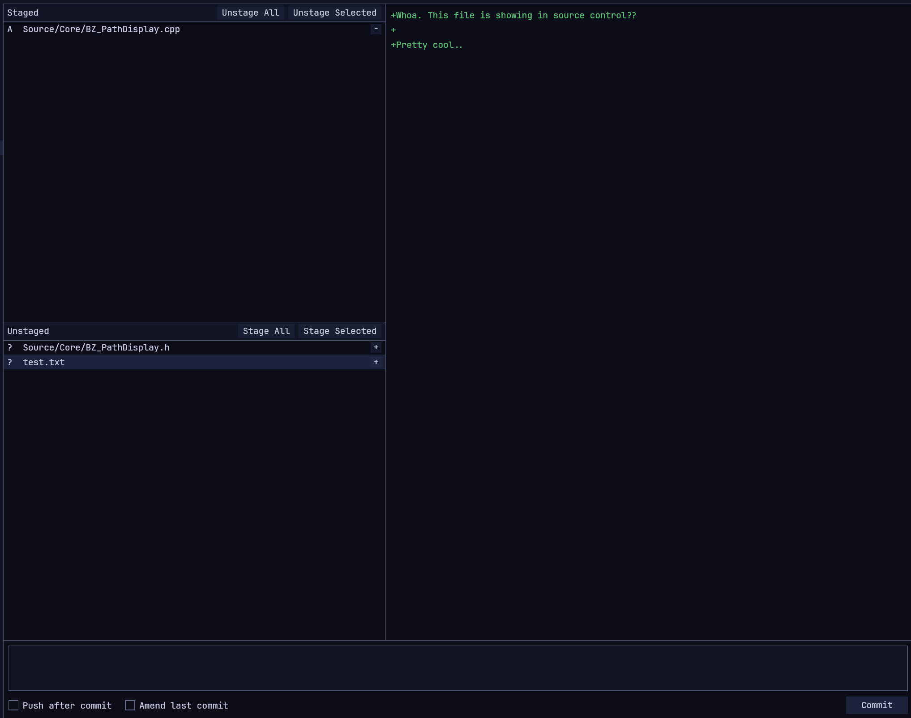

Documentation ∴
A native text editor with version control built in — written in Rust, configured in Lua.
This page walks through the editor, the git window, the terminal and SSH, and lists every
init.lua option, keybinding and theme colour.
∴ full example config →
every setting, in one commented init.lua
01Install & first launch
Download the installer from the home page and run it. Windows is available now; macOS and Linux are on the way.
On first launch you get an empty buffer — point the file tree at a project with Ctrl+O, or just start typing. therefore is single-instance: set it as your default editor and opening a file hands it to the running window as a new tab and raises it, rather than launching a second copy. Your window position, working directory and open tabs are remembered and restored next launch.
git
already installed on your system. If git isn't installed (or isn't on your
PATH), the window says so rather than failing; everything else works without it.02The editor
The main window is a file tree on the left, tabs and your text in the middle, a status bar along the bottom, and the window controls (plus the ∴ config button) top-right.

Drag the empty tab-bar area to move the window, drag any edge to resize, and use the minimize / maximize / close buttons by the ∴ logo. If a file is changed by another program while it's open, therefore reloads it on focus when you have no unsaved edits; if you do, it warns before overwriting on save.

init.lua in a tab (created from a template on first open), then minimize / maximize / close.Right-click a file, a folder or a tab for a context menu. Delete asks first via an in-app confirmation dialog — folder delete is recursive. Ctrl + = / - / 0 (or Ctrl+wheel) zooms.
03File tree & folders
The tree browses local or remote directories. The first row is the current
directory — click it (or press Ctrl+O) to change directory;
‹ .. goes up a level. Changed files and folders get a coloured git dot.

‹ .., folders, then files.- Single-click a folder to expand/collapse it; double-click its name to descend into it (re-roots the tree). Double-clicking the arrow only expands, so you can't fall into a folder by accident.
- Single-click a file to open it — already-open files just switch to their tab, no duplicates. Double-click a file to rename it in place (moves it on disk, or over SFTP).
- Going up past a drive root shows the drives / volumes list, so you can hop between them.
Changing directory opens an in-app folder browser — an in-theme modal that
works for both local and remote directories. Navigate by clicking; Open re-roots the
tree. Set native_file_dialog = true to use your OS's picker instead (local only).

.. to go up; Open re-roots the tree to that folder.Scrollbars appear on the editor and tree when content overflows; they widen on hover and can be dragged.
04Tabs

init.lua with a reload glyph (↻) and close (×); README.md with the markdown preview toggle (≡); and a new tab being renamed inline.- Drag a tab left/right to reorder it — the others slide out of the way.
- Double-click a tab to rename it in place; double-click empty tab-bar space to create a new tab and name it inline. Enter confirms, Esc cancels, clicking away confirms. Renaming moves the file on disk (or over SFTP).
- Ctrl+W closes a tab (or click the ); Ctrl+Tab cycles.
- On a
.mdtab the eye/≡ glyph toggles source ↔ rendered preview (also Ctrl+E).
05The status bar
The bar along the bottom shows, left to right, the active theme, the current file, the line:column, and the current branch. At the far right are two launch buttons.

Those two right-hand icons are the quickest way in: the terminal button is the same as Ctrl+`, and the commit-node button is the same as Ctrl+Shift+G. In the editor, changed line numbers are tinted in the gutter so you can see your edits at a glance.
06The terminal
Ctrl+` (or the terminal button on the status bar) shows a real shell in a panel at the bottom of the editor. It's a genuine PTY — full ANSI colour, drawn with the theme's 16-colour palette. Drag its top edge to resize. It persists while hidden, so toggling it away doesn't kill your session.

+ opens another. In an SSH session it opens a shell on the remote host instead of a local one.Set terminal_shell to pick the program — the default is your OS shell
(cmd.exe on Windows, $SHELL elsewhere). For example
terminal_shell = "pwsh". Height is set by terminal_height (also
draggable).
07The git window
A separate OS window — a graphical git client for the repo you're editing. Open it with
Ctrl+Shift+G or the commit-node button on the status bar. It's a
real second window, so you can park it on another monitor. All git work shells out to the
git CLI on a background thread; outside a repo, or with no git on
PATH, the window says so rather than failing.

The toolbar
The toolbar across the top holds every action, with badges showing how many commits are waiting to push/pull.

The sidebar

The left sidebar switches between File Status (your working-tree changes) and History (the commit graph). Below that it lists the repo's Branches, Remotes, Tags, Stashes and Submodules — click any to jump to it.
Staging & committing
The File Status view puts working-tree changes on the left — staged above unstaged — with the diff of the selected file beside them. Check files to stage them, or use the classic selection modifiers (Shift for a range, Ctrl to toggle one) to grab several at once. Write your message at the bottom and hit Commit.

+/-) move files between panels; the diff shows on the right. Push after commit and Amend last commit sit beside the Commit button.- History — select a commit to see its diff.
git_history_all_branches = falsenarrows the view to the current branch only. - Merge — opens a picker (the same history view in a modal); pick the commit to merge by selecting its row. Commit merge immediately (if no conflicts) does the obvious thing; on conflict the clean files are staged and the conflicted ones are left for you.
- Conflicts — conflicted files during a merge are coloured to stand out and stay unstaged until you resolve them.
08Markdown preview
Toggle a .md tab between source and rendered view with the eye/≡ glyph on
the tab, or Ctrl+E. Set the default view for markdown files with
md_view = "edit" (the default) or "preview".
09Remote files over SSH
Press Ctrl+Shift+O and type a target — user@host
(browses the server's home) or user@host:/path — to open a remote file, edit it
locally, and save back over SSH. Nothing is installed on the server, and editing a remote file
feels exactly like a local one; the network is only touched on connect, open and save. You can
also point at a ~/.ssh/config host alias, e.g. myserver:/srv/app/main.rs.
Auth — ~/.ssh/config is honoured for a bare
alias:/path target (HostName, User, Port,
IdentityFile, with */? wildcards). Methods are tried in
order: THEREFORE_SSH_PASSWORD → THEREFORE_SSH_KEY (a private-key
path) → the config's IdentityFile → the ssh-agent
(SSH_AUTH_SOCK) → the default keys in ~/.ssh. Passphrase-protected
key files aren't decrypted — add them to your agent.
Host keys — verified against ~/.ssh/known_hosts. A first-seen
host prompts for its SHA-256 fingerprint and is remembered on accept (like ssh's
accept-new). If a recorded key later changes, the mismatch is flagged loudly. Saves
are atomic (temp file renamed over the target), so a mid-write disconnect can't truncate the
remote file.
10Configuration & init.lua
Click the ∴ button (top-right) to open your init.lua
in a tab — it's created from a template on first open. Saving it applies the config
immediately: theme, fonts, sizes, undo policy and keybinds all update in real time, no
restart.
It lives at <config-dir>/therefore/init.lua:
| OS | Path |
|---|---|
| Windows | %APPDATA%\therefore\init.lua |
| Linux | ~/.config/therefore/init.lua |
| macOS | ~/Library/Application Support/therefore/init.lua |
The script returns a table; everything in it is optional. A bad config prints an error and falls back to defaults — it won't stop the editor starting. A minimal example:
-- therefore ∴ — your config. Saving this file applies it immediately.
return {
theme = "eink", -- eink, space, forest, deep_ocean, mars, or your own
font_size = 15,
tab_width = 4,
line_numbers = true,
-- terminal_shell = "pwsh", -- default is the OS shell
keys = {
save = "ctrl+s",
find = "ctrl+f",
},
}Your config dir is on Lua's package.path and config_dir holds the
path, so you can split things across files:
theme = require("mytheme") -- <config>/mytheme.lua
local keys = dofile(config_dir .. "/keys.lua")11All config options
Every top-level key you can put in the returned table. Leave one out to get its default.
| Option | Default | What it does |
|---|---|---|
theme | "eink" | a bundled name, a table, or require("yours") |
font | JetBrains Mono | editor font, by family name |
ui_font | JetBrains Mono | tree / tabs / status / menus |
font_size | 15 | |
line_height | font_size × 1.47 | editor line height, px |
tab_width | 4 | indentation width, in spaces |
tab_bar_width | 150 | width of each tab, px |
tab_bar_height | 30 | height of the tab bar, px |
line_numbers | true | show the gutter |
find_case | "smart" | or "sensitive", "insensitive". Smart = insensitive until you type a capital |
tree_width | 220 | file-tree width, px (a dragged width wins) |
terminal_height | 220 | terminal panel height, px (draggable) |
terminal_shell | OS shell | e.g. "pwsh", "bash", "/usr/bin/fish" |
cursor_blink | true | false = solid caret |
cursor_blink_ms | 530 | blink half-period |
undo_break_newline | true | Enter starts a new undo group |
undo_timeout_ms | none | pausing this long starts a new undo group |
zoom_step | 0.1 | per Ctrl+wheel notch |
zoom | 1.0 | initial zoom, if no saved session |
md_view | "edit" | or "preview" — default view for .md |
native_file_dialog | false | true = OS folder picker (local only) |
animations | true | picker entrance, tab-reorder slide |
tab_reorder | true | drag tabs to reorder |
git_history_all_branches | true | false = current branch only |
keys | see below | remap command chords |
12Keybindings
Every command, with its default chord. Override any subset in keys = { ... }; the
rest keep theirs.
keys = {
save = "ctrl+s", close_tab = "ctrl+w",
select_all = "ctrl+a", copy = "ctrl+c",
cut = "ctrl+x", paste = "ctrl+v",
undo = "ctrl+z", redo = "ctrl+y",
open_folder = "ctrl+o", -- re-root the tree (or connect over SSH)
open_remote = "ctrl+shift+o", -- SSH: user@host[:/path]
toggle_preview = "ctrl+e", -- markdown edit <-> preview
find = "ctrl+f", replace = "ctrl+h",
goto_line = "ctrl+g",
toggle_git = "ctrl+shift+g", -- the git window
toggle_terminal = "ctrl+`", -- the terminal panel
}replace defaults to
cmd+alt+f, because cmd+h is the system Hide shortcut and never reaches
apps.Built-in motions & actions
| Key | Action |
|---|---|
| Arrows, Home/End, PageUp/Down | move (hold Ctrl for word/document) |
| Shift+move | extend selection |
| Ctrl+S | save (local disk or over SSH) |
| Ctrl+Z / Ctrl+Y (or Ctrl+Shift+Z) | undo / redo (grouped by typing run) |
| Ctrl+A / C / X / V | select all / copy / cut / paste |
| Ctrl+F / Ctrl+H | find / replace |
| Ctrl+G | go to line |
| Ctrl+W | close tab (or click the ×) |
| Ctrl+Tab | next tab |
| Ctrl+O | change directory (in-app folder browser, or native) |
| Ctrl+Shift+O | connect over SSH (user@host or user@host:/path) |
| Ctrl+Shift+G | open/close the git window |
| Ctrl+` | show/hide the terminal |
| Ctrl+E | markdown edit ↔ preview |
| Ctrl + = / - / 0 | zoom in / out / reset (also Ctrl+wheel) |
| Tab / Shift+Tab | indent / unindent |
| double-click word | select it |
13Themes
Bundled: eink (light, the default), plus the dark space,
forest, deep_ocean and mars. Pick one by name, or write
your own. A theme is a table — base picks a bundled theme to start from, and you
override only what you want; the rest is inherited. Colours are #rrggbb or
#rgb.
theme = {
name = "midnight",
base = "space",
bg = "#0f1115",
fg = "#d6d9df",
}Put your theme in a .lua file next to init.lua and load it with
theme = require("mytheme"). Every field:
| Field | Controls |
|---|---|
bg fg sel dim panel | base surfaces and text |
cur_line | background of the cursor's line |
border border_width | window border; width 0 hides it |
keyword function type string comment number | syntax palette |
git_added git_modified git_removed | gutter change bars |
git_bar_width git_bar_opacity | change-bar look |
head_dot git_badge | HEAD marker, toolbar count badges |
diff_add diff_removed diff_hunk | the File Status diff |
conflict | conflicted files during a merge |
graph_colors | commit-graph lane palette (cycled) |
graph_lane_width graph_line_width graph_node_scale | graph geometry |
ansi | the terminal's 16 base colours — all 16 or none |
ansi is black, red, green, yellow, blue, magenta, cyan, white, then
the bright eight. Indices 16–255 (the colour cube and grayscale ramp) are computed, not
themeable. The full example config has a complete
theme with every field filled in.